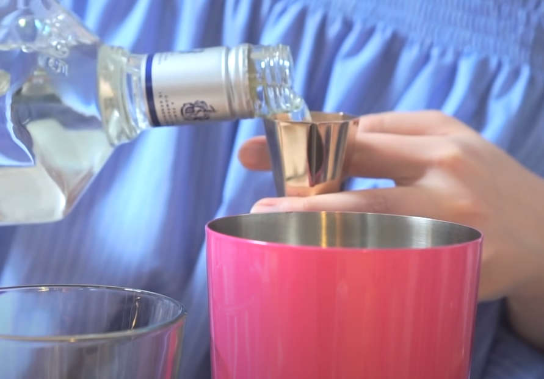
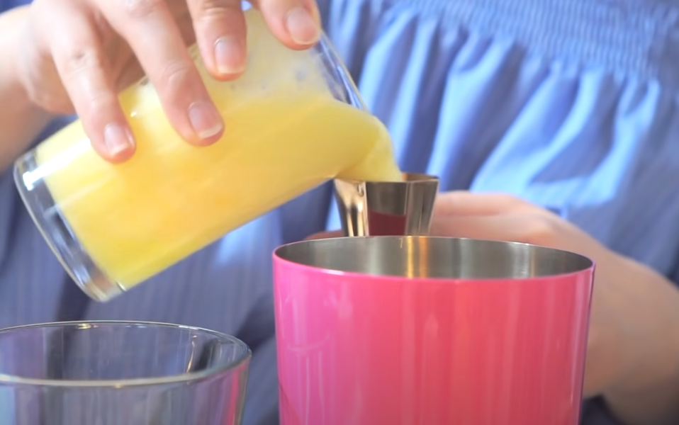
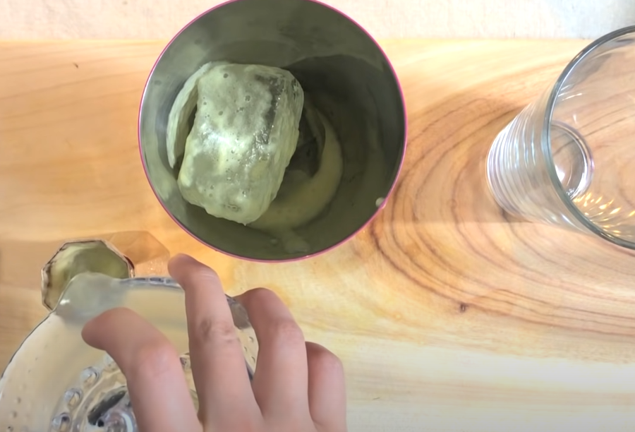
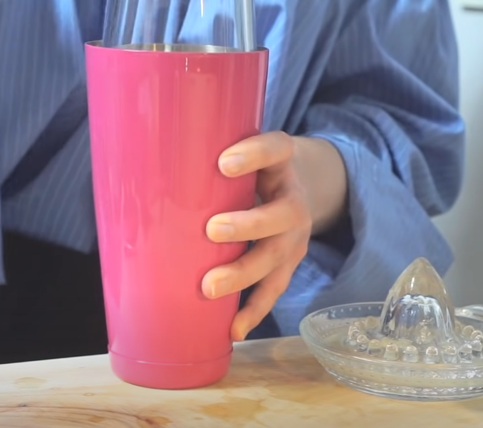
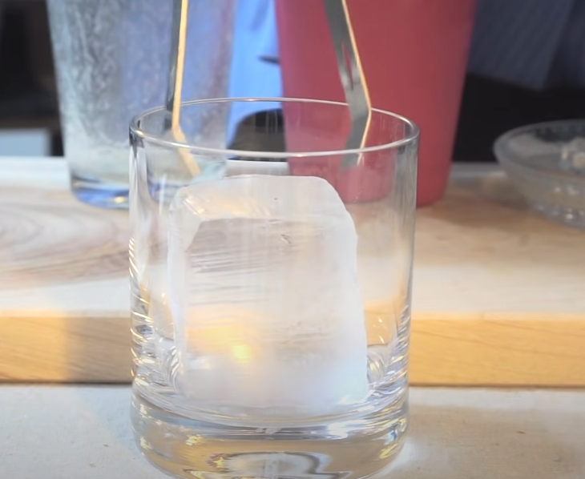
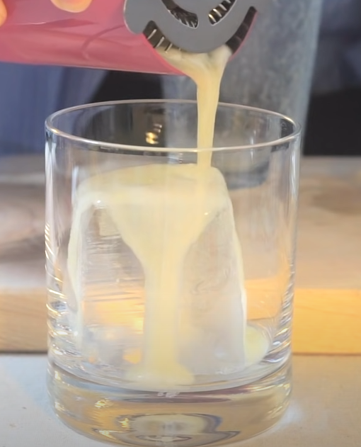
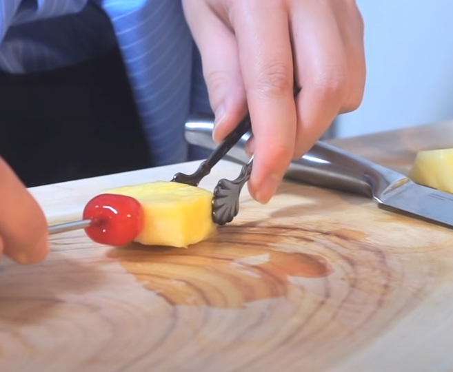
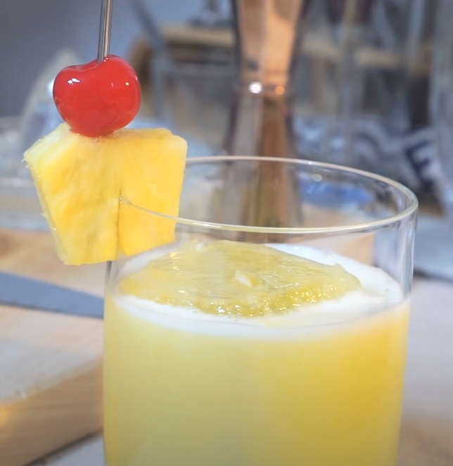
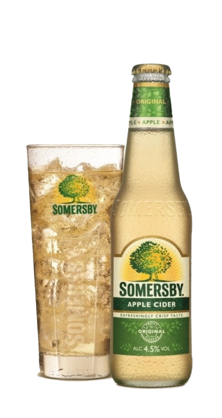

/브랜디/브랜디 사이드카.png)
사이드카
| 글라스 | 기법 |
| 마티니 글라스 | 쉐이킹 |
| 가니쉬 | |
| 없음 | |
| 재료 | |
|
브랜디 1oz 코앵트로 또는 트리플섹 1oz 레몬 주스 1/4oz |
|
사이드카의 기본적인 뜻은 오토바이 옆에 달린 작은 ㅈ짐칸 또는 사람이 탈 수 있는 공간을 말합니다. 그럼 왜 칵텡리 이름이 사이드카 일까요? 이름의 유래에 대해서는 여러가지 가설이 있는데요. 그중 한가지 가설은 1933년 프랑스파리의 '허리즈 뉴욕'이라는 술집의 바텐더 허리 멕켄혼이 만들었다는 가설도 있습니다. 당시 사이드카에 여성을 태워서 다니는 경우가 많았다고 하는데 만약 사고가 날 경우에 운전자가 본능적으로 자기 방어를 목적으로 사고가 나는 방향을 사이드카 부분으로 방향을 돌리기 쉽기 때문에 옆에 타고 있던 여성들의 피해가 많았다고 합니다. 그래서 술을 많이 못마시는 '여성들도 쉽게 마셔서 피해를 많이 본다'는 의미를 익살스럽게 표현해서 만든 이름이 사이드카라고 하는군요.
/데킬라/데킬라 선라이즈.png)
데킬라 썬라이즈
| 글라스 | 기법 |
| 푸티드 필스너 글라스 | 빌드 / 플룻 |
| 가니쉬 | |
| 없음 | |
| 재료 | |
|
데킬라 1 1/2oz 오렌지 주스 Fill up 그레나딘시럽 1/2oz |
|
데킬라를 베이스로 하는 칵테일이며, 이름은 일출을 닮았다고 해서 붙여진 이름이다. 오렌지 주스와 그레나딘 시럽이 들어가 잘 넘어가는 편. 때문에 주의할 필요가 있다. 1930년대부터 만들어진 술이지만 영국의 전설적인 록밴드 롤링 스톤스가 그들의 전성기인 Exile on Main St. 1972투어에서 즐겨마시면서 유명해졌다고 한다. 심지어 1972투어를 데킬라 선라이즈 투어라고 불려지기도했다고 한다. 데킬라를 제외시키면 선라이즈, 데킬라 대신 레모네이드나 스프라이트를 쓰면 레드 씨 선라이즈라는 논 알콜 칵테일이 된다. 데킬라를 보드카로 바꾸면 보드카 선라이즈(혹은 러시아 선라이즈), 럼으로 바꾸면 캐리비안 선라이즈가 된다.
데킬라 사워
이름에는 사워가 들어가지만 그렇게 신맛나는 칵테일은 아니다.
/데킬라/데킬라 사워 왼쪽.png)
| 글라스 |
| 와인 글라스 |
| 기법 |
| 쉐이킹 |
| 가니쉬 |
| 체리, 레몬 |
/데킬라/데킬라 사워 오른쪽.png)
| 재료/레시피 |
|
1. 쉐이커에 데킬라 2oz를 넣는다. 2. 쉐이커에 레몬 주스 1/2oz를 넣는다. 3. 설탕 1tsp을 넣는다. 4. 모두 쉐이킹 한 후 와인 글라스에 따른다. 5. 체리와 레몬으로 가니쉬를 한다. |
/데킬라/데킬라 마타도르.png)
마타도르
| 글라스 |
| 온더락 글라스 |
| 기법 |
| Shake |
| 가니쉬 |
| 파인애플 / 체리 |
| 재료 |
| 데킬라 1oz, 파인애플 주스 1 1/2oz, 라임 또는 레몬주스 1/2oz |
|  | 1. 데킬라 1oz를 쉐이커에 넣는다. |
| 2. 파인애플 주스 1 1/2oz를 쉐이커에 넣는다. |  |
|  | 3. 라임 또는 레몬 주스 1/2oz를 쉐이커에 넣는다.. |
| 4. 쉐이킹한다. |  |
|  | 5. 글라스에 얼음을 넣어 칠링한다. |
| 6. 쉐이킹한 칵테일을 잔에 넣는다. |  |
|  | 7. 파인애플과 체리를 칵테일 픽에 꽂는다. |
| 8. 잔에 가니쉬 해주면 완성! |  |
마타도르 이야기
스페인식 투우에서 소에게 최후의 일격을 가하는 역할을 맡은 투우사. 보통 화려하게 차려 입은 스타 투우사이자 가장 실력있는 사람일 경우가 많다. 일반적인 '투우사'의 이미지는 이 마타도르를 가리킨다. 카포테(capote : 위 사진의 붉은 천)와 검이 상징적인 요소. 마타도르는 '죽이는 사람'이라는 뜻으로 그 역할에서 이름을 따 온 것이다.
/데킬라/데킬라 치마요.png)
치마요
데킬라 베이스로, 멕시코에서 만들어진 칵테일이라고 한다. 기원은 1965년 아르투로 자라밀로(Arturo Jaramillo)라는 레스토랑 주인이 만들어냈다고 한다. 이때 레스토랑의 위치가 치마요 폭포 근처였고, 이름의 유래는 이 때문이라고 한다.2. 글라스에 데킬라 1 1/2oz를 넣는다.
3. 사과주 1oz를 넣는다.
4. 레몬주스 1/4oz를 넣는다.
5. 크렘 드 카시스 1/4oz를 넣는다.
6. 사과로 가니쉬 한다.
/재료/재료 데낄라.png)
데킬라 / 1 1/2oz
사과주 / 1oz
/재료/재료 레몬.png)
레몬 주스 / 1/4oz
/재료/재료 카시스.png)
크렘 드 카시스 1/4oz